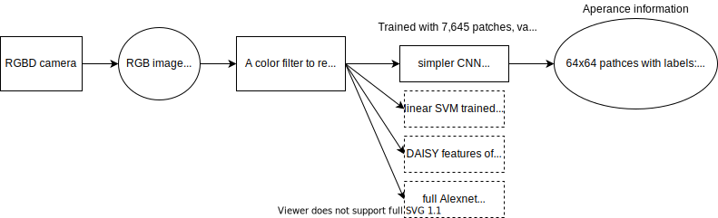
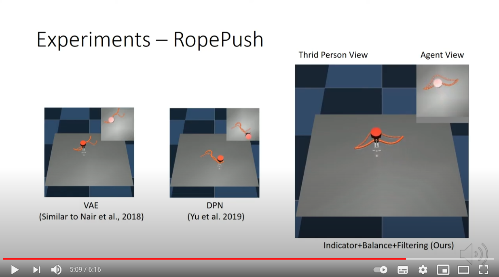
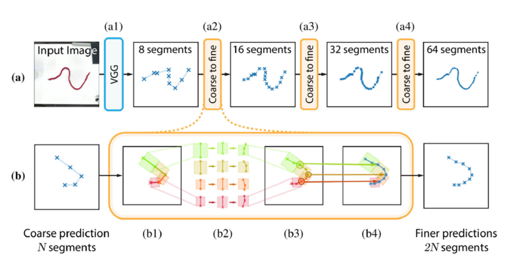
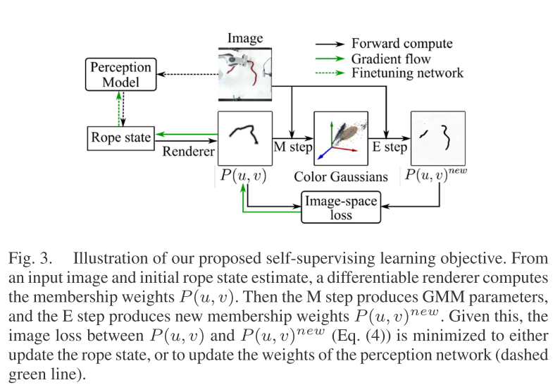
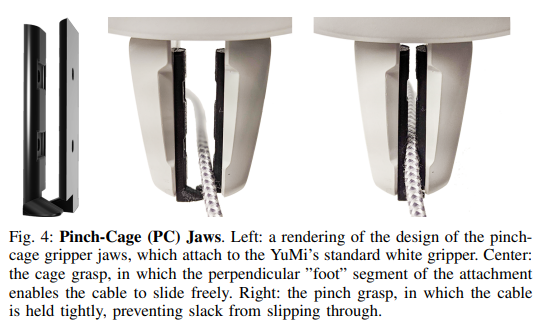
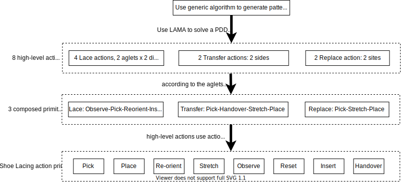
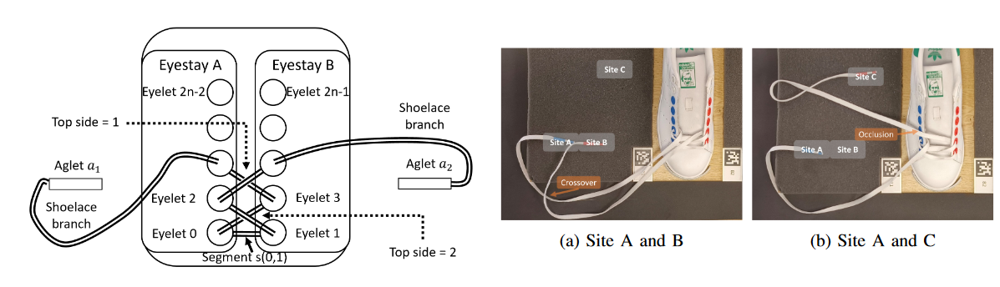

Deformable linear objects
课题的总结 ^skip-numbering
- 问题的第一层：
- 应用是什么（工业，医疗，制造等）？
- folding cloth(house holding), food industry, robotic surgery, aerospace, automotive, electromechanical industries
- 问题是如何抽象的，根据是否有惯性的参与，大类可分为static和dynamic，static中又包含quasi-static（参考Takahashi et al.的论文第三段）
- 结绳结 tying/untying knots
- 穿洞 insert DLO into a hole
- 摆放成指定形状 form a shape
- 与环境交互情况下的操纵contact-based DLO routing
- 穿入导管cathetering
- 等等
- 应用是什么（工业，医疗，制造等）？
- 问题的第二层：是否对DLO进行建模（model-based/model-free）？若建模，使用何种建模方式（Physical/Topology）？
- Geometrical 或 physical (geometrical + mechanical)
- mass-spring, eleastic rod, multi-body, finite element, dynamic spline, etc.
- Topological
- Geometrical 或 physical (geometrical + mechanical)
- 问题的第三层：如何对DLO进行识别？机器视觉？触觉？混合？
- Motion planning/manipulation planning
- avoid contact with the environment
- e.g., planner compute a path in the shape space
- Shape control
- Model-based/model-free
| Category | Method |
|---|---|
| Application | |
| Problem abstraction | |
| DLO model (physical model/topology model/model-free)? | |
| DLO detecting method (CV/Tact/Mixture) | |
| If use CV, what method? | |
| Motion planning method | |
| Shape Control |
实验室/研究者 ^skip-numbering
- Jihong Zhu，University of York，个人主页
- LAR-UNIBO
- AUTOLAB
1 Robotic manipulation and sensing of deformable objects in domestic and industrial applications: a survey
Jose Sanchez et al., The International Journal of Robotics Rsearch 2018
- Progress %, link
- 可形变物体的分类方式：参数类型
- uniparametric单参数 (linear)：如cable
- No compression strength: cables, strings, and ropes
- Have a large strain: elastic tubes and beams
- biparametric双参数 (planar, cloth-like)：如paper
- triparametric三参数：如solid objects
- uniparametric单参数 (linear)：如cable
2 A review of techniques for modeling flexible cables
Naijing Lv et al., Computer-aided design 2020
3 Leveraging appearance priors in non-rigid registration, with application to manipulation of deformable objects
Sandy H. Huang et al., IROS2015
- Progress %, link
- 主要工作
An approach to learning feature descriptors invariant to small non-rigid transformations.A method of using these descriptors to incorporate apperance of deformable objects into non-rigid registration.
- 方法：
分为两步：
- 获取外形信息appearance information 
- 相关工作
- State-of-the-art approach: Thin Plate Spline Robust Point Matching
4 Deformable linear object manipulation planning with contacts
Olivier Roussel et al., IROS 2014
- Progress %, link
- 主要工作
5 Method for placing a rope in a target shape and its application to a clove hitch
Masaru Takizawa et al., RO-MAN 2015
- Progress %, link
- 主要工作：
propose a rope-shape model which can be used in limited situations, and derive hand trajectories from the model in a simple manner未对绳索建模，假设了绳子的物理属性，只对hand trajectory进行了建模。
6 Reinforcement learning without ground truth state
- https://arxiv.org/abs/1905.07866
- https://www.youtube.com/watch?v=Uxt4oK1XgTs 
- A. V. Nair, V. Pong, M. Dalal, S. Bahl, S. Lin, and S. Levine. Visual reinforcement learning with imagined goals. In NeurIPS, pages 9191–9200, 2018
- T. Yu, G. Shevchuk, D. Sadigh, and C. Finn. Unsupervised visuomotor control through distributional planning networks. Robotics: Science and Systems, 2019.
7 Interleaving Planning and Control for Deformable Object Manipulation
8 Estimating Model Utility for Deformable Object Manipulation Using Multiarmed Bandit Methods
9 Robotic manipulation of deformable objects by tangent space mapping and non-rigid registration
10 An approach to realistic physical simulation of digitally captured deformable linear objects
11 In-air Knotting of Rope using Dual-Arm Robot based on Deep Learning
Kanata Suzuki et al., Fujitsu Laboratories, IROS 2021
- Progress %, link
- 端到端的学习
- 从图像中提取（通过CAE）30 [dim]个特征，加上机械臂的14 [dim]（
）个特征，以及接近传感器1 [dim]个特征，送入LSTM给出14 [dim]个控制 - 没有提及是否进行了仿真
- 从图像中提取（通过CAE）30 [dim]个特征，加上机械臂的14 [dim]（
| Category | Method |
|---|---|
| Application | |
| Problem abstraction | tying knots |
| DLO model (physical model/topology model/model-free)? | LSTM with image features (from CAE) + proximity sensor |
| DLO detecting method (CV/Tact/Mixture) | RGB camera -> CAE |
| If use CV, what method? | |
| Motion planning method | directly get joints angle from LSTM |
| Shape Control |
^suzuki-iros2021
12 Learning Topological Motion Primitives for Knot Planning
Mengyuan Yan et al., Stanford IPRL Lab, IROS2020
- Progress %, link
- 3 levels:
- Top level: knot theory defines a graph with topological states as nodes and topological actions as edges 根据knot theory定义一系列状态（topological states/nodes）及状态之间的转移关系（actions as edges）
- 2nd level: translate each topological action into a motion trajectory of the robot and rope, conditioned on the observed configuration of the rope.
topological action -> robot motion trajectory —>(simulate rope trajectory)-> use end configuration as the next start configuration (
-> ) - 将每一种绳结状态间的转移关系（topological action）转化为对应的robot motion trajectory
- 在有了robot motion之后，对rope状态进行仿真
- bottom level: execute the motion plan on the real robot 执行中通过visual tracking+MPC，随时调整robot motion，以应对perception和actuation时产生的噪声
- 执行过程：
- rope的状态获取源自于论文Self-Supervised Learning of State Estimation for Manipulating Deformable Linear Objects
- find a plan of grasping points and motion trajectories that can bring the current rope configuration to a goal configuration with the desired goal topology 寻找抓取点，生成可以完成状态间转换的motion trajectory
- execute the motion plan with visual tracking and MPC
- topological motion primitives的形式
- the action space of the motion primitives will be long robot motion trajectories parameterized by spline curves, instead of small delta positions commonly used for feedback policies 优点：1. 提高了RL问题的训练效率和稳定性。2. spline curves可以生成足够复杂的曲线减少系绳结所需的步骤
- Spline curve由3个控制点生成（6D action space）：
- 第一个点在绳子上，为抓取点（1D）
- 最后一个点在桌子平面上，robot将绳子轻轻放下（2D）
- 在桌子平面以上，为spline的最高点（3D）
- 训练过程
- 分为两步
- RL针对每一步/每种motion primitive（总共四类topological motion primitives）单独训练
- 训练RL完成多步任务，将motion primitives序列化形成plicy
- demonstration数据收集：
- 在image中人工选取三个控制点
- 在生成spline的过程中添加高斯噪声，通过仿真判断是否是适合的topological action
- 分为两步
13 Self-Supervised Learning of State Estimation for Manipulating Deformable Linear Objects
Mengyuan Yan et al., Stanford IPRL Lab, RAL2020
| Category | Method |
|---|---|
| Application | |
| Problem abstraction | 2d shape-forming |
| DLO model (physical model/topology model/model-free)? | state-space representation of the physical model, uses a bi-directional LSTM to model the structure of a chain-like mass-spring system |
| DLO detecting method (CV/Tact/Mixture) | CV |
| If use CV, what method? | CNN to estimate the explicit rope state |
| Motion planning method | MPPI(model predictive path integral control) based on the dynamics models |
| Shape Control | shape as state |
^yan-ral2020
- 主要工作：通过raw image获取绳子的state space及其dynamics，不需要annotation（前三步）
Main challenge: estimate the explicit state from raw image
-
coarse-to-fine state estimation using hierarchical Spatial Transformer Networks (STN) 
- 先通过VGG network估计出8段直线段拟合曲线，
- 根据8段直线抽取8个正方形区域，用STN估计每个区域中绳子的头，尾和中间点的位置
- 合并邻接区域的头尾得到16段直线
- 重复上面的步骤进一步细化
- 直至得到64段直线
-
self-supervising learning objective that enables training state estimation on real data, without requiring expensive ground truth annotations CNN estimates the explicit rope state at each step 这个objective是什么？ differentiable renderer and an image space loss
- 先用rendered spline curves进行训练
默认绳子和背景有较好的区分度，可以将物体和背景分别聚为可以用Gaussian Mixture Model（GMM）表达的两个类，算法采用Expectation-Maximization （EM）。EM算法分为E step和M step。需要给一个initial rope state estimate（初始的
）  - 然后用real images加上proposed self-supervising learning objective进行fine-tune
- 先用rendered spline curves进行训练
默认绳子和背景有较好的区分度，可以将物体和背景分别聚为可以用Gaussian Mixture Model（GMM）表达的两个类，算法采用Expectation-Maximization （EM）。EM算法分为E step和M step。需要给一个initial rope state estimate（初始的
-
Propose a novel dynamics model in state space that enforces physics priors for deformable linear objects (instead of a physical engine). Dynamics mdoel通过双向LSTM实现，模拟chain-like mass-spring system
-
验证工作：Rope manipulation with MPC 控制：选取抓握点，生成一个2D向量作为运动轨迹 MPC horizon? Model Predictive Path integral Control (MPPI)
-
14 Robotic Manipulation Planning for Shaping Deformable Linear Objects With Environmental Contacts
Jihong Zhu et al., LIRMM Universite de Montpellier, RAL2020
| Category | Method |
|---|---|
| Application | Cable harness |
| Problem abstraction | Contact-based DLO routing |
| DLO model (physical model/topology model/model-free)? | geometri analysis on the contact mobility |
| DLO detecting method (CV/Tact/Mixture) | vision based DLO & contact detector |
| If use CV, what method? | RGB->HSV->uniform thresholding to binarized->Canny edge detector |
| Motion planning method | introduce a novel contact mobility indexed based on the angular range of motion, ACMI(angular contact mobility index), motion based on geometri contact constraint |
| Shape control |
^zhu-ral2020
- 解决什么问题：一根足够长的线缆，在工作平面内有一系列体积较小的圆柱状物体，机械需引导线缆以指定顺序绕过物体（产生接触），最后连接至指定位置
- 要素：
- 机器人的配置：双夹爪，一个
固定一端，另一个 引导线缆另一端运动 - 机器人的运动轨迹特征：末端执行器始终在一个平面内运动
- 视觉：RGB-D相机装在移动的机械臂上
- 线缆特性：soft and can adapt to the curvature of the contact object
- 机器人的配置：双夹爪，一个
- 理论：
- 首先定义Angular contact Mobility Index (ACMI)：
- 定义local Cartesian coordinate fram
，考察相对于接触点的线缆运动 - 定义线缆的运动方向为单位向量
， 其中 ，向量 相对于 轴的夹角 （注意与下面的 相区分） - 产生接触后
为接触点（线缆上从 到 之间点的集合， 与 为接触所产生的曲线的边界） 为每个 接触点所对应的接触力的方向 为contact curve angular range（ 到圆心的线段与 到圆心的线段所形成的夹角）
- 定义local Cartesian coordinate fram
- 在定义ACMI后定义两个motion primitives以完成任务：
- 注：
为固定线缆的夹爪， 为引导线缆运动的夹爪 - rotate:
hold + rotate rotates the calbe with a fixed point on the cable as the rotation center - pull:
release + pull
- 注：
- 首先定义Angular contact Mobility Index (ACMI)：
- 方法：
- eye-in-hand配置，摄像头被固定在了夹爪
上 - 背景：白，接触点：蓝，线缆：黑。
- OpenCV，通过HSV thresholding找到接触点
- uniform thresholding将图像二值化，用Canny edge detector找出图像中线缆的边缘
- 因为线缆一段由夹爪
固定，通过一个小的ROI（region of interest）找出线缆的bottom point - 线缆另一端始终处于图像最上方（因为摄像头配置的原因）
- eye-in-hand配置，摄像头被固定在了夹爪
15 Motion Planning for Dual-Arm Manipulation of Elastic Rods
Avishai Sintov et al., Tel-Aviv University, RAL2020
- Rely on previous work by Bretl and McCarthy who showed that the configuration space of a Kirchhoff elsatic rod
- Kirchhoff rod model: discretized center line + twist along the center line? https://www.youtube.com/watch?v=MBYBV8EAis0
16 New model-based manipulation technique for reshaping deformable linear objects
Alaa Khalifa et al., LAR-UNIBO, IJAMT 2021
| Category | Method |
|---|---|
| Application | Not directly indicate realworld application |
| Problem abstraction | form a shape |
| DLO model (physical model/topology model/model-free)? | dynamic spline model (physical: mathematical + system’s Lagrange equations) |
| DLO detecting method (CV/Tact/Mixture) | check the reference |
| If use CV, what method? | x |
| Motion planning method | single arm, move only one point from the DLO current state (grasping primitive) to the related point in the desired or goal state (releasing primitive) |
| Shape Control |
- 主要工作
- model-based manipulation technique for reshaping a DLO
- 通过安装有一个夹爪的单一机械臂（single arm, one gripper），寻找最佳的夹取点（grasping point）
- 实验通过MATLAB仿真完成， DLO通过采用spline-based dynamic model建模，桌面模型为a spring and a damper
17 Model-based reinrocement learning approach for deformable linear object manipulation
Haifeng Han et al., NAIST, CASE 2017
18 Motion Planning for Robotic Manipulation of Deformable Linear Objects
Mitul Saha et al., ICRA2006
| Category | Method |
|---|---|
| Application | |
| Problem abstraction | Tying knots |
| DLO model (physical model/topology model/model-free)? | |
| DLO detecting method (CV/Tact/Mixture) | |
| If use CV, what method? | |
| Motion planning method | |
| Shape Control |
19 Robots of the Lost Arc: Self-Supervised Learning to Dynamically Manipulate Fixed-Endpoint Cables
Harry Zhang et al., ICRA 2021
- Dynamic manipulation，完成三类操作
-
Vaulting: vault over obstacles
a person vacuuming may find that the vacuum power cable is stuck on a chair, and use dynamic manipulation to “vault” the cable over the chair
-
Knocking: knock object from pedestals
-
Weaving: weave between obstacles
-
- **仿真环境：**Featherstone rigid-body simulator from Bullet Physics via Blender. Cable consist of a series of small capsule links connected by spring and torsional forces
| Category | Method |
|---|---|
| Application | manipulate vacuum power cable |
| Problem abstraction | vaulting, knocking, weaving |
| DLO model (physical model/topology model/model-free)? | model-free, use RGB image as the observation to estimate cable’s configuration space |
| DLO detecting method (CV/Tact/Mixture) | RGB image |
| If use CV, what method? | |
| Motion planning method | Iterative traiNing for Dynamic manipulation |
| Shape Control |
20 Winding Manipulator Based on High-speed Visual Feedback Control
* Koichiro Ito et al., Yamakawa Laboratory, UTokyo, CCTA 2017*
- “we propose casting manipulation based on highspeed visual feedback control with a whip.”
| Category | Method |
|---|---|
| Application | |
| Problem abstraction | dynamic manipulation - winding |
| DLO model (physical model/topology model/model-free)? | Physical + geometrical |
| DLO detecting method (CV/Tact/Mixture) | high-speed camera |
| If use CV, what method? | |
| Motion planning method | |
| Shape Control |
21 Motion Planning for Dynamic Knotting of a Flexible Rope with a High-speed Robot Arm
* Yuji Yamakawa et al., IROS2010*
- 可能是最早一篇提到dynamic manipulation with flexible body的论文？
| Category | Method |
|---|---|
| Application | |
| Problem abstraction | dynamic manipulation - knot tying |
| DLO model (physical model/topology model/model-free)? | Multi-link system based on geometric property and some physical assumption. |
| DLO detecting method (CV/Tact/Mixture) | Sim to real, no vision involved |
| If use CV, what method? | |
| Motion planning method | desired rope configuration is given by a human, converted to executable rope configuration, then to robot arm configuration through IK |
| Shape Control |
^yamakawa-irso2010
22 Cable Manipulation with a Tactile-Reactive Gripper
Yu She et al., MITCSAIL, RSS2020
| Category | Method |
|---|---|
| Application | |
| Problem abstraction | cable following and cable insertion |
| DLO model (physical model/topology model/model-free)? | No DLO model, but estimate cable pose, friection force, and grasp quality. model the cable-gripper dynamics (as a planar pulling problem) |
| DLO detecting method (CV/Tact/Mixture) | Tactile sensing (GelSight) |
| If use CV, what method? | |
| Motion planning method | N/A, controller designed for grasp and cable pose |
| Shape Control |
^she-rss2020
23 A case study of trajectory transfer through non-rigid registration for a simplified suturing scenario
John Schulman et al., BAIR Lab, IROS 2013
- Simulation: OpenRAVE (why choose this one?)
| Category | Method |
|---|---|
| Application | surgical suturing |
| Problem abstraction | tying knots |
| DLO model (physical model/topology model/model-free)? | Geometrical, “thin plate splines” |
| DLO detecting method (CV/Tact/Mixture) | cv, AR markers, point and click interface |
| If use CV, what method? | |
| Motion planning method | Learning from demonstrations: Use thin plate splines robust point matching to obtain a transformation |
| Shape Control |
^schulman-iros2013
24 Path Planning for Deformable Linear Objects
Mark Moll et al., Trans on Robotics 2006
25 Robot-assisted catheter insertion using hybrid impedance control
J. Jayender et al., ICRA 2006
- 控制DLO在有限空间（管道）内的方向和力，和其它可以在任意时间与DLO任意位置交互的操作有所不同 | Category | Method | | ----------------------------------------------------- | ------ | | Application | 手术导管 | | Problem abstraction | 导管类问题 | | DLO model (physical model/topology model/model-free)? | 因为控制的方式不同，未使用DLO模型，直接采用Hybrid Impedance Control | | DLO detecting method (CV/Tact/Mixture) | | | If use CV, what method? | | | Motion planning method | | | Shape Control | |
26 Robotized Assembly of a Wire Harness in Car Production Line
Xin Jiang et al., Tohoku University, IROS 2010
| Category | Method |
|---|---|
| Application | wire harness assembly |
| Problem abstraction | contact-based DLO routing |
| DLO model (physical model/topology model/model-free)? | simple geometrical, the position of a wire segment is estimated by interpolating the position of its adjacent harness clamps. |
| DLO detecting method (CV/Tact/Mixture) | CV, ARToolKit |
| If use CV, what method? | ARToolKit |
| Motion planning method | vision-in-the-loop, simple vision servoing feedback control |
| Shape Control |
^jiang-iros2010
27 Planning for Manipulation of Interlinked Deformable Linear Objects With Applications to Aircraft Assembly
Ankit Shah, et al., IEEE Trans on Automation Science and Engineering 2018
| Category | Method |
|---|---|
| Application | wire harness assembly |
| Problem abstraction | contact-based DLO routing |
| DLO model (physical model/topology model/model-free)? | Geometrical, a series of sampling points, curve parameterized by cable length, use minimum energy-based scheme to compute cable shape |
| DLO detecting method (CV/Tact/Mixture) | Only simulation, full knowledge. |
| If use CV, what method? | |
| Motion planning method | Defined 5 action types(such as grasp cable: moving and grasping), only simulation, does not involve a specific robotic arm |
| Shape Control |
^shah-trans-ase2018
28 An Online Method for Tight-tolerance Insertion Tasks for String and Rope
Weifu Wang, et al., ICRA 2015
| Category | Method |
|---|---|
| Application | suturing |
| Problem abstraction | insert DLO into holes |
| DLO model (physical model/topology model/model-free)? | quasi-static model, a diminishing rigidity jacobian, geomatrical method |
| DLO detecting method (CV/Tact/Mixture) | two RGB camera |
| If use CV, what method? | |
| Motion planning method | |
| Shape Control |
^wang-icra2015
29 Autonomously Untangling long cables
Vainavi Viswanath et al., AUTOLAB at UCB, RSS2022
- Hardware setup:
- PhotoNeo Phoxi Camera that captures depth and grayscale images of resolution 732 x 1142px
| Category | Method |
|---|---|
| Application | |
| Problem abstraction | |
| DLO model (physical model/topology model/model-free)? | |
| DLO detecting method (CV/Tact/Mixture) | can be segmented from the manipulation surface via color thresholding |
| If use CV, what method? | |
| Motion planning method | |
| Shape Control |
30 Keypoint-Based Planar Bimanual Shaping of Deformable Linear Objects Under Environmental Constraints With Hierarchical Action Framework
Shengzeng Huo et al., ROMI Lab @ HKPoly, RAL 2022
| Category | Method |
|---|---|
| Application | |
| Problem abstraction | contact-based DLO routing |
| DLO model (physical model/topology model/model-free)? | kinematic multibody system via keypoint encoding network |
| DLO detecting method (CV/Tact/Mixture) | |
| If use CV, what method? | use OpenCV to segment the DLO with a morphological operation-based color filter |
| Motion planning method | hierarchical action primitive: contact primitive和shape primitive |
| Shape Control |
- 通过truncated Fourier series model描述DLO轮廓（contour）
- 从原始图像数据raw observation
-> 图形学方法获取DLO状态state of the DLO -> 通过 （preception representation model/network）获取关键点sequential keypoints - trained a supervised key-point detection network (FCN, fully convolutional network)
- FCN: fully convolutional network FCN-L: label of the FCN; FCN-R: raw output of the FCN; FCN-F: fine-tuning FCN
- hierarchical action primitive: contact primitive和shape primitive
- 在实际环境测试时图像的处理：use OpenCV to segment the DLO with a morphological operation-based color filter
31 Autonomously Untangling Long Cables
Vainavi Viswanath, et al., AUTOLAB @ UCB, RSS 2022
| Category | Method |
|---|---|
| Application | |
| Problem abstraction | |
| DLO model (physical model/topology model/model-free)? | |
| DLO detecting method (CV/Tact/Mixture) | |
| If use CV, what method? | |
| Motion planning method | |
| Shape Control |
Novel gripper jaw hardware for untangling that enables two modes of grasping: caging and pinching半关闭时允许在线缆上滑动， 完全关闭时拉紧线缆 
32 SGTM 2.0: Autonomously Untangling Long Cables using Interactive Perception
Kaushi Shivakumar et al., AUTOLAB @ UCB, ICRA 2023
| Category | Method |
|---|---|
| Application | |
| Problem abstraction | untangle cable |
| DLO model (physical model/topology model/model-free)? | Continuous path |
| DLO detecting method (CV/Tact/Mixture) | 1.只在 2.色彩阈值划分 3.通过CNN找出endpoint和knot active perception and interactive perception |
| If use CV, what method? | |
| Motion planning method | |
| Shape Control |
如何解决partial observation和self-occlusion的问题 —— 通过manipulation primitives梳理/移动线材
- SGTM 2.0将感知和操作结合
- 感知——图像处理：黑色背景白色线材，工作平面限制在
，通过阈值区分线材和背景， - Endpoint detection: Faster R-CNN with Resnet-50 FPN
- Knot detection: 用与Endpoint detection的网络相同的架构
- Cable Tracing：输入为RGB图像和start pixel（检测出的endpoint的中心），通过一组splines与之匹配
- Cage-Pinch Dilation Point Selection：使用FCN和ResNet-34，输出热力图
- 操作——Manipulation Primitives for Interactive Perception
- Cage-Pinch Dialation：参考发表在RSS的文章
- Partial Cage-Pinch Dilation
- Reidemeister Move（Reidemeister移动/R变换，一种扭结理论的操作）
- Incremental Reidemeister Move
- Exposure Action：找不到endpoint时移动线材
33 Goal-Image Conditioned Dynamic Cable Manipulation through Bayesian Inference and Multi-Objective Black-Box Optimization
Kuniyuki Takahashi et al., Preferred Networks Inc. ICRA 2023
| Category | Method |
|---|---|
| Application | |
| Problem abstraction | dynamic, form a shape |
| DLO model (physical model/topology model/model-free)? | stochastic forward model, Tree-structured Parzen Estimator，端到端 |
| DLO detecting method (CV/Tact/Mixture) | Only RGB, no D。通过阈值对图像二值化，作为神经网络的输入 |
| If use CV, what method? | |
| Motion planning method | 端到端，不进行motion plan |
| Shape Control | 建立前后帧（shape）与帧间关节运动的关联 |
- 通过三自由度机械臂动态的摆动改变线缆形状
- dynamic task
- 端到端，输入图像输出关节角度。black-box optimization (BBO) -> Tree-structured Parzen Estimator (TPE)
34 Focused Adaptation of Dynamics Models for Deformable Object Manipulation
Peter Mitrano et al., ARM LAB @ Umich, ICRA 2023
- 一个Sim2Real方向的研究，如何通过虚拟环境训练神经网络去对动态环境建模，并将这个模型适用到实际生产环境中
- 操作线材只是这个研究所设计的系统的一个应用实验
| Category | Method |
|---|---|
| Application | |
| Problem abstraction | |
| DLO model (physical model/topology model/model-free)? | DLO表现为25个3D节点。全连接神经网络直接建立state-action-state’的连接 |
| DLO detecting method (CV/Tact/Mixture) | CDCPD2 |
| If use CV, what method? | |
| Motion planning method | |
| Shape Control |
- 设计了一个dynamics model用于解决dynamic adaptation problem。
- 定义dynamic adaptation problem
标准的dynamic learning problem定义为
附加定义：距离函数 。True dynamic为 ，learned dynamics为 。顶i有阈值 ，当 时source和target environment相似。通过一系列状态转移得到预期状态。 - 采用全连接的神经网络（fully-connected neural network）训练dynamics model
包含offline phrase和online phrase。
- offline phrase使用一个简单的模拟环境采集的数据进行训练，随机选取动作进行交互，训练神经网络。
- online phrase通过MDE（model deviation estimator，一个神经网络）和kinodynamic RRT planner
- 定义dynamic adaptation problem
标准的dynamic learning problem定义为
35 Tracking Partially-Occluded Deformable Objects while Enforcing Geometric Constraints
Yixuan Wang et al. ARM LAB@Umich, ICRA 2021
36 Deformable Linear Objects 3D Shape Estimation and Tracking from Multiple 2D Views
Alessio Caporali et al., Lar-unibo, RAL 2023
- 摄像头装在机械臂上
- 单一图像提取DLO：使用FastDLO
- 拟合提取后的DLO ：cubic B-spline
- 视角的选取（采用跟踪tracking的思路）：先对当前图像中的DLO进行估计，然后沿着DLO的延伸方向（principal direction）运动，将其放在视角正中
In particular, after the estimation of a given section of the DLO, the camera is moved forward along the DLO principal direction and centered with respect to the estimated points. in order to increase the portion of the same DLO visible in every sample, it is assumed to have the camera oriented along the DLO main axis and to record the samples by sliding orthogonally to it.
37 Contact-aware Shaping and Maintenance of Deformable Linear Objects
Kejia Chen et al., Technical University of Munich, IROS 2023
| Category | Method |
|---|---|
| Application | |
| Problem abstraction | cable routing task |
| DLO model (physical model/topology model/model-free)? | verices and edges |
| DLO detecting method (CV/Tact/Mixture) | CV(shape) + tact(tension?) |
| If use CV, what method? | FASTDLO |
| Motion planning method | |
| Shape Control |
- 步骤：
- 给定预期形状
- fixure placing algorithm决定在何处放置fixture
- 获取DLO形状，通过radius of curvature（ROC）决定fixture位置
- 通过shape tracking skill和clip fixing skill完成绕线（DLO manipulation）
- shape tracking skill
- 使用FASTDLO实现对绳子形状的在线跟踪
- 先确定robot leader应如何将绳子从当前位置摆放到指定位置（要求：collision-free），再通过RRT*在joint space设计robot follower的路径
- clip fixing skill需预先张紧绳子（pre-contact stretching），建立接触（contact establishment），再压入（push in），使用adaptive force impedance controller
- shape tracking skill
- object-centered framework以结合上述两点完成cable routing任务
38 Bi-Manual Robot Shoe Lacing
Haining Luo et al., Imperial College London, IROS 2023
| Category | Method |
|---|---|
| Application | |
| Problem abstraction | Shoe lacing |
| DLO model (physical model/topology model/model-free)? | model-free: generic algorithm |
| DLO detecting method (CV/Tact/Mixture) | CV |
| If use CV, what method? | color thresholding |
| Motion planning method | PDDL + LAMA |
| Shape Control |

- 使用Planning Domain Definition Language (PDDL)描述Shoe Lacing (SL)问题，通过LAMA找到primitive sequence
- The LAMA Planner: Guiding Cost-Based Anytime Planning with Landmarks, Journal of Arificial Intelligence Research, 39:127-177, 2010
- 是否相关？：
- Find Aglet -> design pattern
- 名词解释

、 ，Aglet，鞋带头 、 ，Eyelet，鞋带孔，脚标为 和 表明序号 ，Segment，两个被连接的鞋带孔 之间的鞋带段 ，Site，鞋带头的固定放置点，用来放置鞋带头的固定位置，避免缠绕，应该是每侧各有三个。 ，Gripper
- 通过三大步骤解决问题：
- Pattern design，设计系鞋带的样式，使用遗传算法generic algorithm
- Task planner，由pattern->a sequence of actions（PDDL and LAMA planner）
- 8组atomic b-manual primitives（SL action primitives）：
- Pick
- Place
- Re-orient：改变鞋带头的方向（转90度）
- Stretch：拉线
- Observe：获取图像，使用active perception strategy
- Reset：某一侧的机械臂复位
- Insert：穿过一个鞋带孔
- Handover：一侧夹爪将绳头交给另一侧夹爪？
- 在这8组之上是3组high-level action primitives（左臂右臂各三个总计6个，这八个基本primitives构成了3个high-level primitives，规划时只规划这三个？）：
- Lace: Observe-Pick-Reorient-Insert-Handover-Stretch-Place
- Transfer: Pick-Handover-Stretch-Place
- Replace: Pick-Stretch-Place
- 8组atomic b-manual primitives（SL action primitives）：
- Execution manager逐个执行primitives
- symbolic description包含objects，states，和robot actions
- Objects是啥？好像文中没有提及。是“2 aglets, 6 placing cites, 2 grippers and 2n eyelets”么？
- States：定义了9个状态（由鞋带等元素的位置），根据这些状态
：鞋带头在某个固定放置点 ：某个鞋带孔已经有鞋带穿过 ：某个固定放置点被鞋带覆盖 ：某个固定放置点被鞋带头占据 ：鞋带孔 优先级高于 ：根据设计的样式，鞋带头 应从 中穿出 ：鞋带头 与所穿出的鞋带孔同侧（放置纠缠） ：鞋带头 与所穿出的鞋带孔均在左侧 ：鞋带头 与所穿出的鞋带孔均在右侧
- Actions：使用3个high-level primitives构造了8个action，每个action的cost相同（6 high-level bimanual actions including lace, transfer and placing from both left and right sides?）
：将某个鞋带头从一个孔穿至另一个孔，共2（两个鞋带头之一）x2（从左至右或从右至左两种方向）种组合 将鞋带头从一侧的固定放置点移到对侧的固定放置点，共两种组合 将鞋带头从一侧的固定放置点移动到同侧的固定放置点，共两种组合
- 求解总actions数最少的plan
- active perception：设计了一个衡量检测图像可信度的参数，调整摄像位置
- 图像检测：color thresholding检测eyelets和aglets
- “the stretch primitive cannot always fully stretches the shoelace. Since there is no actual feedback on the shoelace length, the estimation accuracy deteriorates, causing more tension applied to the shoelace”
39 Combining Self-Supervised Learning and Imitation for Vision-Based Rope Manipulation
Ashvin Nair et al., RAIL and RLL, UCB, ICRA 2017
-
解决问题的方法：
- Current state (image space) ---action(learned model)---> goal state (image space)
-
解决问题的思路
- 将人的演示作为high-level guidance，通过一系列图像描述任务序列中的每一步，解决一个任务需要多个步骤才能完成的问题
- demonstration: what to do learned model: how to do
- 只使用一个action primitives: pick and place
-
实现
- 只用RGB数据不需要点云，绳头有蓝色胶带，使得机械臂可以自动将其拉直复位（应该是color-thresholding）
-
t-distributed stochastic neighbor embedding